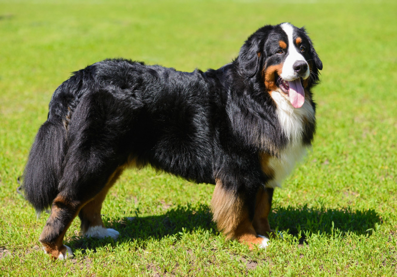

Le bouvier bernois, les alpes Suisses
Le bouvier bernois est un chien reconnu pour être hypersociable et hyperaffectif. Il est souvent trop attaché à sa famille. C'est un chien incapable de rester seul. Petite expérience personnelle: J'en avait adopter une. Mais comme elle était incapable de rester seule, j'en ai adopté une deuxième pour qu'elle ai une petite soeur avec elle.
Surnommé "Boubou", ces chiens sont capable d'obéir au doigt et à l'oeil. Il sont de tempérament plutôt calme, mais parfois joueur.
Je vous met ici une vidéo Youtube de la chaîne Esprit Dog qui parle de cette race:
Ces chiens sont grands, mesurent jusqu'à 70 cm au garrot. Ils pèsent jusqu'à 110 lbs pour les mâles. Poils long tricolor, ils sont magnifiques!
source de l'image: woopets.fr/chien/race/bouvier-bernois